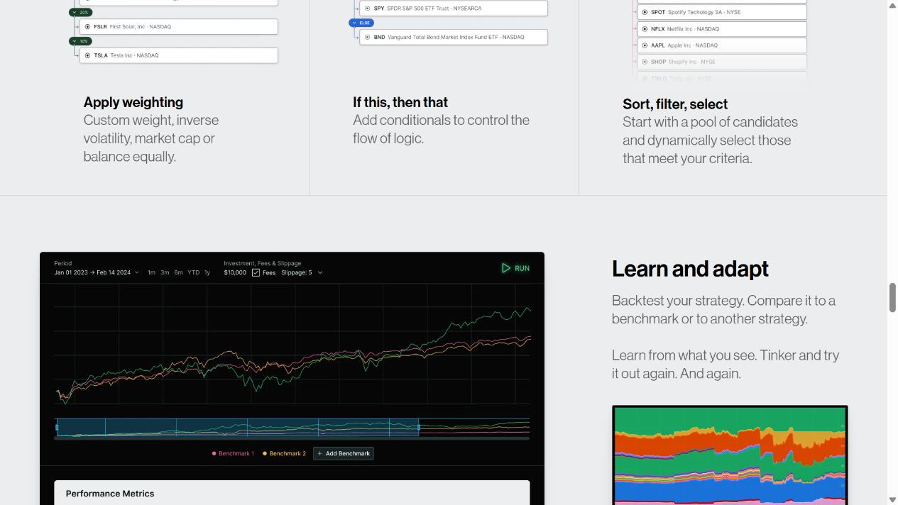
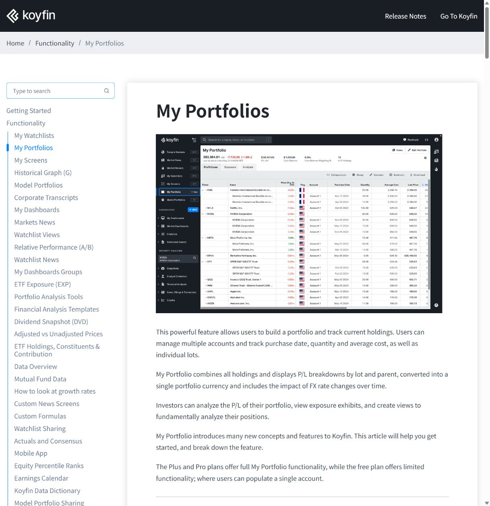
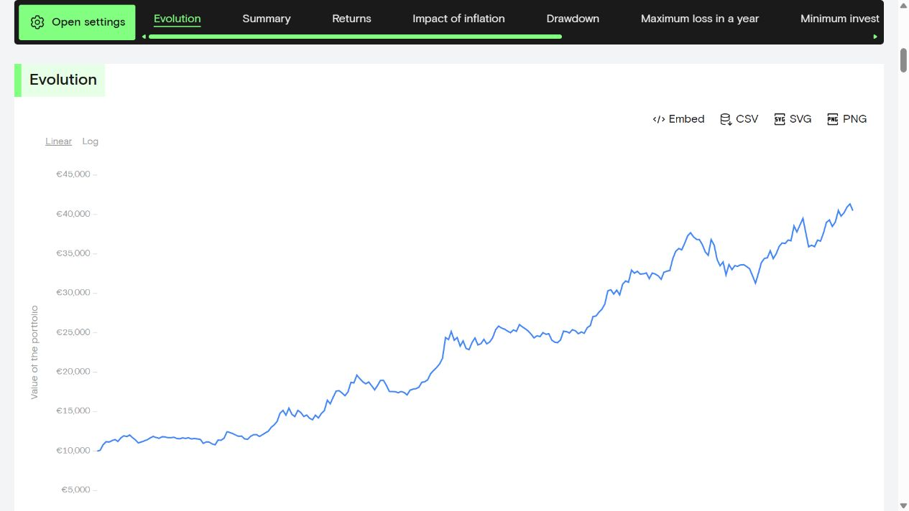

01 / 内容组织
Composer
把策略表现和持仓变化放在一起理解。
值得借鉴主曲线、时间范围和历史配置色带，让用户能追问“这一段为什么变化”。
应用到 Candela净值、持仓区间与回撤联动；同一日期展示对应标的和仓位。
需要取舍保留结构，评估深色图表的阅读负担。本轮不引入策略编辑与交易执行。
来源：官方产品页 ↗把已有策略实验转成公众可以理解和持续使用的功能页。先比较信息组织与阅读方式，再用同一份内容探索三种视觉方向。
阶段 1–2 · 参考与简报已整理 · 视觉方向待选
把策略表现和持仓变化放在一起理解。
值得借鉴主曲线、时间范围和历史配置色带，让用户能追问“这一段为什么变化”。
应用到 Candela净值、持仓区间与回撤联动；同一日期展示对应标的和仓位。
需要取舍保留结构，评估深色图表的阅读负担。本轮不引入策略编辑与交易执行。
来源：官方产品页 ↗
用整齐的数据排列支持快速比较。
值得借鉴摘要集中、列对齐、视图切换明确，适合重复查看。
应用到 Candela四标的与历史指标统一精度和单位，避免把每个数字拆成一张大卡片。
需要取舍降低导航复杂度，为术语保留解释。只有四个标的，无需全市场终端的密度。
来源：官方帮助页 ↗
让首次访问者顺着图表读懂策略。
值得借鉴清楚的章节、大幅曲线、克制的网格，以及靠近指标的解释。
应用到 Candela依次组织历史表现、持仓变化、回撤和规则；保持重点清楚、详情可展开。
需要取舍控制留白和页面长度，保留快速定位；强调色重新按 Candela 的方向设计。
来源：公开组合示例 ↗保留资金曲线、持仓区间和回撤。把密集的版本与公式说明移到可展开详情，旧版对照成为可选内容，首屏优先帮助用户理解策略和历史表现。

原页数据来自历史模拟，不是实际账户或当前市场数据。